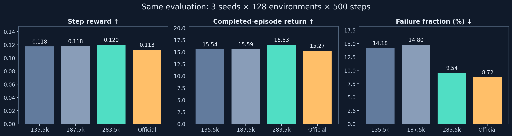
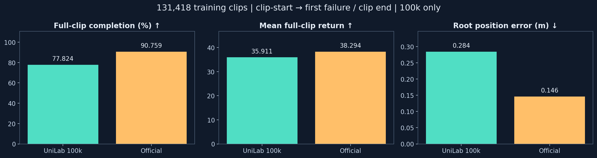
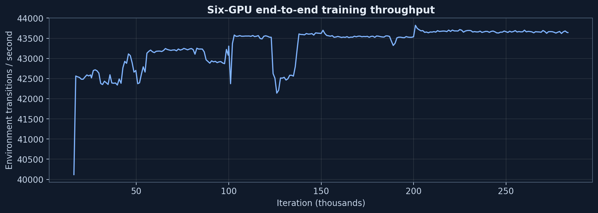
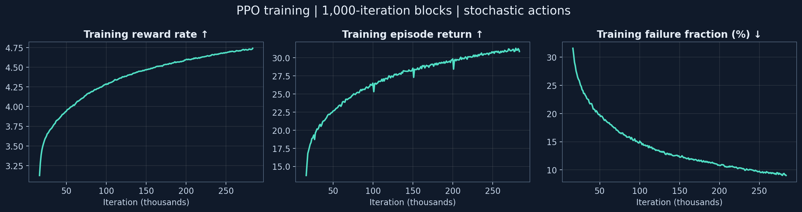
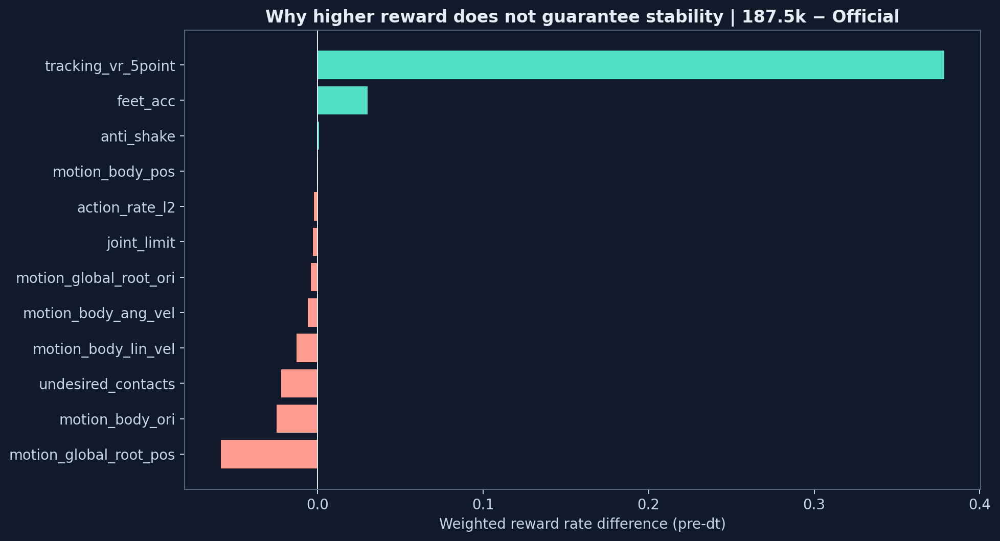

SONIC v1.0 REPRODUCTION · 2026.09.20SONIC v1.0 复现 · 2026.09.20
From aligned rewards to whole-body motion.从对齐的奖励 到全身运动。
SONIC v1.0 PPO experiments in UniLab / MuJoCo Warp. This evidence snapshot uses the 283500-iteration checkpoint, from a training run targeting 300000 iterations. The official weights are evaluated in the same UniLab/MJWarp environment.SONIC v1.0 在 UniLab / MuJoCo Warp 中的 PPO 实验。本证据快照使用283500 迭代检查点，来自目标 300000 迭代的训练运行。官方权重在同一 UniLab/MJWarp 环境中评测。
PPO training and evaluation verifiedPPO 训练与评测已验证FlashSAC time-to-quality speedup remains unverifiedFlashSAC 达到同等质量的加速比尚未验证
9.54%Three-seed window failure fraction · official 8.72%三种子窗口失败占比 · 官方 8.72%
131,418Clips evaluated with paired policies at 100000 iterations在 100000 迭代处以成对策略评测的动作片段
Improving quality, with full-motion validation still ahead质量持续提升，全动作验证仍在路上
Compared with 187500 iterations, the 283500 checkpoint improves return and lowers the failure fraction in all three environment seeds. Pooled return rises 6.03%; the failure fraction drops 5.25 percentage points. Each policy is evaluated for 192000 transitions with deterministic actions.与 187500 迭代相比，283500 检查点在全部三个环境种子上提升了回合回报并降低了失败占比。汇总回合回报上升 6.03%；失败占比下降 5.25 个百分点。每个策略以确定性动作评测 192000 个交互样本。

Window evaluation窗口评测
135500
187500
283500
Official v1.0官方 v1.0
Total reward rate总奖励速率
5.8763
5.9106
6.0108
5.6322
Mean episode return平均回合回报
15.539
15.587
16.526
15.270
Mean episode length (steps)平均回合长度（步）
133.83
133.37
138.30
136.45
Failures / ended episodes失败数 / 已结束回合数
110 / 776
112 / 757
71 / 744
67 / 768
Protocol: environment seeds 7/17/27, 128 environments × 500 steps per seed, uniform reference-state initialization. Return and length include only ended episodes. The window failure fraction is not full-motion completion rate; higher return does not establish overall superiority to the official checkpoint.协议：环境种子 7/17/27，每种环境 128 个 × 500 步，均匀参考状态初始化。回合回报与长度仅统计已结束的回合。窗口失败占比并非全动作完成率；更高的回合回报并不证明整体上优于官方检查点。
Stricter evidence: full-corpus evaluation at 100000 iterations更严格的证据：100000 迭代处的全语料评测

All 131418 training motion clips and 48042726 reference frames, from the first frame to the first failure or natural clip end, without a 500-step cap. The completion gap is −12.94 percentage points, with a paired mirror-family bootstrap interval of [−13.22, −12.65]. An additional 8192-clip subset was checked with two environment seeds.覆盖全部 131418 个训练动作片段与 48042726 帧参考帧，从首帧运行至首次失败或片段自然结束，不设 500 步上限。完成率差距为 −12.94 个百分点，成对镜像族 bootstrap 区间为 [−13.22, −12.65]。另用两个环境种子检查了 8192 个片段的子集。
These full-corpus results belong to the 100000 checkpoint, not the 283500 checkpoint. The corpus contains training motions, not unseen test motions. Both policies run in UniLab/MJWarp; this is not the official native Isaac Lab benchmark.这些全语料结果属于 100000 检查点，而非 283500 检查点。语料包含训练动作，并非未见过的测试动作。两个策略均在 UniLab/MJWarp 中运行；这不是官方原生 Isaac Lab 基准。
Left: UniLab PPO 283500左：UniLab PPO 283500 · · Right: SONIC Official v1.0 checkpoint右：SONIC 官方 v1.0 检查点. Same UniLab/MJWarp environment, motion start and initial observation. Cyan shows the reference skeleton and trajectory; orange shows the actual trajectory.。相同的 UniLab/MJWarp 环境、动作起点与初始观测。青色为参考骨架与轨迹；橙色为实际轨迹。
13Full UniLab motions · zero failures完整 UniLab 动作 · 零失败
89.78 sTotal paired video duration成对视频总时长
8 / 13Lower mean root and body errors than official in this gallery本组视频中平均根部与身体误差低于官方
1080p / 50 fpsBoth policies recorded for these comparisons两个策略均按此规格录制对比视频
These videos show performance on specific motions and do not estimate corpus-wide success. Aggregate results use the fixed evaluation sets above. Errors come from the recorded trajectories over their shared active prefix. If a policy fails, its simulation stops and its first termination frame is frozen and labeled. Both policies complete all 13 motions in this gallery.这些视频展示特定动作上的表现，不能用于估计全语料成功率。汇总结果采用上述固定评测集。误差来自录制轨迹在共同有效前缀上的统计。若某策略失败，其仿真停止，首个终止帧会被定格并标注。两个策略均完成了本组的全部 13 个动作。
01 / Vogue traveling arms01 / Vogue 行进摆臂
UniLab: full completion · 0 failuresUniLab：全程完成 · 0 次失败 Official: full completion · 5.34 seconds官方：全程完成 · 5.34 秒
Shared first 5.34s共同前 5.34 秒
UniLab
SONIC OfficialSONIC 官方
Mean root position error平均根部位置误差
10.0 cm
22.0 cm
Mean body position error平均身体位置误差
11.4 cm
22.2 cm
Lower mean root and body errors than official · Reference path: 3.05 m平均根部与身体误差低于官方 · 参考路径：3.05 m
Training costs use iteration timing, excluding inter-stage waits and startup overhead; these are not calendar durations. Earlier recipes varied. Exploration, failed experiments and other evaluations are not fully included. GPU-hours measure allocated device time, not energy consumption.训练成本按迭代耗时计算，不含阶段间等待与启动开销；这些并非日历时长。早期训练配方有所差异。探索、失败实验及其他评测未完全计入。GPU 小时衡量的是设备占用时间，而非能耗。


The public official fine-tuning example uses 8 processes × 4096 environments; its documentation recommends 64+ GPUs. These are public configuration references, not verified resources used to train the released checkpoint. Different samples per iteration prevent direct iteration-count comparisons. Official training duration and FlashSAC speedup at matched quality remain unverified.公开的官方微调示例使用 8 进程 × 4096 环境；其文档建议 64 块以上 GPU。这些仅为公开配置参考，并非已核实的发布检查点训练资源。每次迭代的样本量不同，无法直接比较迭代次数。官方训练时长与 FlashSAC 在同等质量下的加速比仍未验证。
Why can reward rise without better motion performance?为什么奖励上升而动作表现未必更好？
At 187500 iterations, the reward advantage from local VR tracking offsets losses in root position, orientation, contact and velocity. Accurate body configurations in pelvis-local coordinates do not ensure accurate world-space trajectories. A high average reward does not guarantee that feet or end effectors never cross a failure threshold.在 187500 迭代处，局部 VR 跟踪带来的奖励优势抵消了根部位置、朝向、接触与速度上的损失。骨盆局部坐标下准确的身体姿态并不能保证世界空间轨迹准确。较高的平均奖励并不保证脚部或末端执行器不越过失败阈值。

Verified已验证
Both policies use the same reward coefficients and termination rules. Total reward is a pre-dt rate; per-step reward equals total × 0.02. Episode return includes the termination step and excludes critic bootstrap. Higher reward can coexist with lower full-motion completion.两个策略使用相同的奖励系数与终止规则。总奖励为 dt 之前的速率；每步奖励等于总奖励 × 0.02。回合回报包含终止步，且不含 critic bootstrap。更高的奖励可以与更低的全动作完成率并存。
Still to establish尚待确证
Full-motion paired evaluation of the newer checkpoint, broader shared-prefix tracking analysis, and FlashSAC time-to-quality experiments. Window and video improvements provide evidence of progress, but do not replace these acceptance criteria.对新检查点的全动作成对评测、更广泛的共同前缀跟踪分析，以及 FlashSAC 达到同等质量所需时间的实验。窗口与视频上的改进是进展的证据，但不能替代这些验收标准。